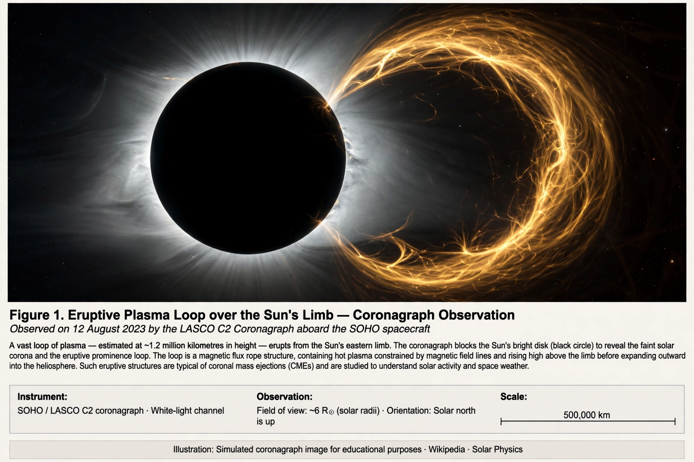

Coronal mass ejection
From Wikipedia, the free encyclopedia

A coronal mass ejection (CME) is a significant ejection of plasma and magnetic field from the Sun's Corona into the heliosphere — billions of tonnes of charged particles travelling at up to 3,000 km/s. When a CME's magnetic field points southward on arrival at Earth, it can trigger Geomagnetic storms that light auroras, damage satellites, disrupt radio and GPS, and induce currents in power grids — as in the 1989 Hydro-Québec blackout and the great Carrington Event storm of 1859.
Mechanism and observation
CMEs erupt when stressed coronal magnetic fields (often above sunspot groups and filaments) explosively reconfigure, expelling a flux-rope of plasma. Coronagraphs (SOHO's LASCO since 1995) catalogue thousands; stereoscopic views from STEREO and warning from monitors at the L1 point give forecasters 15–60 minutes of certain notice after days of probabilistic warning.
Effects
Beyond the 1989 Quebec outage (six million people, nine hours), storms have ended satellite missions, dosed aircrew, and in May 2024 produced the strongest storm in two decades — auroras to the tropics, GPS-guided tractors astray — without catastrophic grid damage, a live rehearsal for a Carrington-class event whose cost is estimated in the trillions.